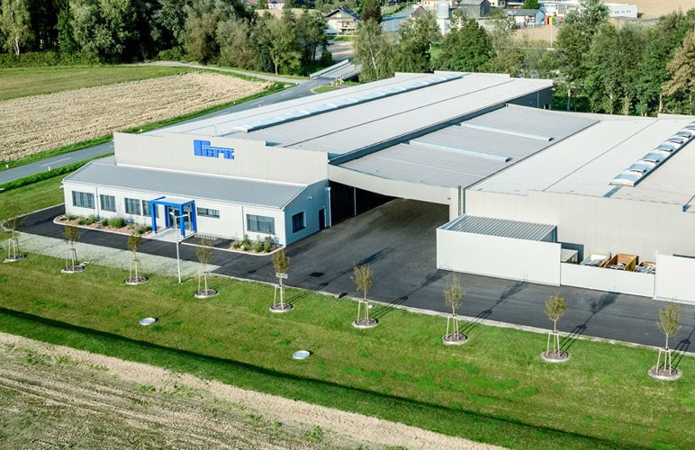
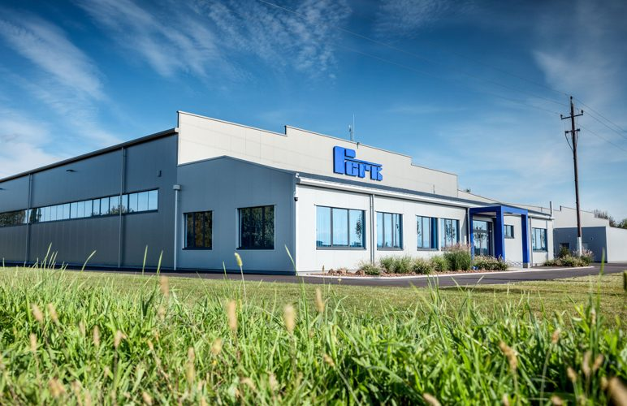

Eckdaten der Investition
- Jahr
- 2023
- Anlage
- Faserlaserschneidanlage
- Lager
- automatisiertes Blechlagersystem
- Anbindung
- ERP-System, automatische Lagerbuchung
- Wirkung
- Standortsicherung und Mitarbeiteraufbau
- Programm
- IWB/EFRE
Start · Unternehmen
Unternehmen
Seit vier Generationen steht der Name Ferk für Metallbearbeitung in höchster Qualität. Heute präsentiert sich das Unternehmen als Spezialist für die Entwicklung und Realisierung anspruchsvoller technischer Herausforderungen im Metallbau.
Über uns
Was das Unternehmen in der Vergangenheit wie auch heute auszeichnet, ist nicht nur das technische Know-how – es ist das Herz für das Material Metall, der persönliche Einsatz aller Mitarbeiter, um auch scheinbar Unmögliches wahr werden zu lassen. Die Zertifizierung für das Managementsystem in den Bereichen Metalltechnik, Laserschneiden und Pulverbeschichten gewährleistet zusätzlich die professionelle Abwicklung Ihrer Projekte.
Im Laufe von vier Generationen hat sich Ferk von einem kleinen Metallbauer zu einem Gewerbebetrieb beachtlicher Größenordnung entwickelt. Trotz dieses Wachstums ist im Unternehmen eines spürbar: die Begeisterung aller Mitarbeiter für das Material Metall.
Geschäftsführer: Karl F. Ferk

Entwicklung
Vom kleinen Metallbauer zum Gewerbebetrieb beachtlicher Größenordnung – der Name Ferk steht seit vier Generationen für Metallbearbeitung in höchster Qualität.
Auszeichnung als „Austrian Leading Company“ in der jeweiligen Kategorie.
Inbetriebnahme der neuen Produktionshallen mit modernster technischer Ausstattung. Mit der neuen Halle ging auch eine in Österreich einzigartige robotergesteuerte Pulverbeschichtungsanlage in Betrieb.
Eine moderne Eloxalanlage vervollständigt den Bereich Oberflächentechnik.
Investition in eine neue Faserlaserschneidanlage mit automatisiertem Blechlagersystem und Anbindung an das ERP-System für automatische Lagerbuchung.

Unsere Hallen
Wir freuen uns, Sie an unserem neuen Standort ganz in der Nähe unserer bisherigen Produktion begrüßen zu dürfen. Optimierte Arbeitsabläufe und zahlreiche technische Neuerungen garantieren, dass Ihre Projekte auch in Zukunft in höchster Qualität abgewickelt werden.
Vier Imagefilme über Betrieb, Fertigung und Oberflächentechnik sind auf YouTube veröffentlicht: Film 1, Film 2, Film 3, Film 4. Die Filme werden hier bewusst nur verlinkt und nicht eingebettet, damit beim Seitenaufruf keine Daten an Dritte übertragen werden.
EFRE-Projekt
Wir investieren in eine neue Faserlaserschneidanlage mit automatisiertem Blechlagersystem und Anbindung an unser ERP-System für die automatische Lagerbuchung.
Wir freuen uns, mit der neuen Anlage unser Produktportfolio für unsere Kunden erweitern zu können. Die Investition garantiert uns eine Standortsicherung sowie einen Mitarbeiteraufbau.
Nähere Informationen zum Programm IWB/EFRE finden Sie auf www.efre.gv.at.
Mitarbeiter
Natürlich ist auch in unserer Branche innovative Technologie nicht mehr wegzudenken. Dennoch: Ohne unser hervorragendes Team wäre auch die modernste Technologie kein Garant für eine erfolgreiche Unternehmensentwicklung. Engagiert, motiviert und bestens ausgebildet.

Qualität & Auszeichnungen
Wir sind in den Bereichen Metalltechnik, Lasertechnik und Pulverbeschichtung zertifiziert. Im Zuge unserer zweijährlichen Qualifizierungsmaßnahmen des Schweißpersonals weist unser Unternehmen derzeit 20 Schweißer-Prüfungsbescheinigungen auf.
Austrian Leading Company 2015 – ausgezeichnet in der jeweiligen Kategorie als dynamisches Unternehmen.